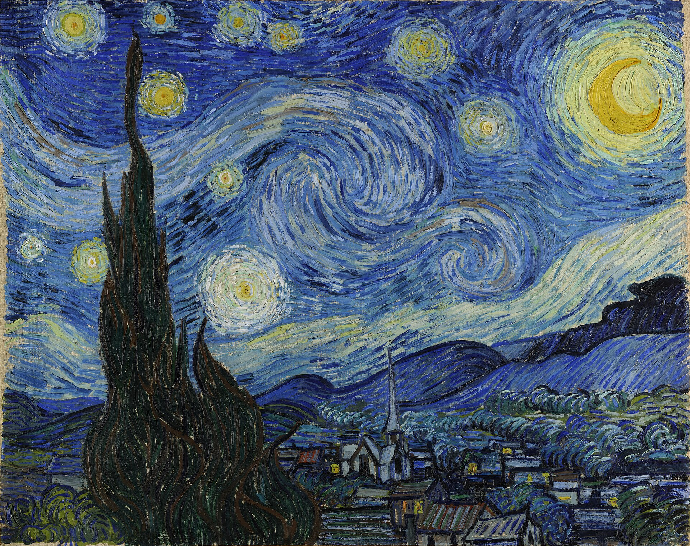

星夜 The Starry Night
星夜 / The Starry Night · 梵高 / Vincent van Gogh · 1889年6月 / June 1889 · 纽约现代艺术博物馆 / The Museum of Modern Art, New York
图片：Wikimedia Commons（Google Art Project），公有领域 / Image: Wikimedia Commons (Google Art Project), public domain

发现 · Discover
铁栏窗 The barred window
梵高在信里写道：“透过装着铁栏的窗户，我能看到一片围起来的麦田。”
Van Gogh wrote: "Through the iron-barred window, I can see an enclosed square of wheat."
日出前 Before sunrise
画的是他房间东窗外，日出前的景色。
It shows the view from his east-facing window, just before sunrise.
想象的村庄 An imagined village
画里的村庄是他加上去的，从窗口其实看不到。
The village was his own addition; it could not be seen from the window.
柏树 The cypress
近处的柏树被他画得又高又大，像一团升起的火焰。同一个夏天，他在《麦田与柏树》里也画了柏树。
In the foreground, the cypress rises tall and dark, like a flame. That same summer, he painted cypresses in A Wheatfield, with Cypresses too.
白天画的星夜 A night painted by day
这幅星夜，其实是白天在他一楼的画室里画的。
This starry night was actually painted by day, in his ground-floor studio.
二十一次 Twenty-one times
窗外这片景色，他至少画过21次，有日出，有月亮升起，有晴天，也有雨天。
He painted the view from this window at least 21 times: at sunrise and moonrise, on sunny days and rainy ones.
故事 · The story
ACT I 第一幕 · 一个很久的愿望 A long-held wish
早在1888年刚到阿尔勒时，梵高就写信说：“我需要一个有柏树的星夜。”
As early as 1888, soon after arriving in Arles, Van Gogh wrote: "I need a starry night with cypresses."
1889年6月 · 纽约现代艺术博物馆 / June 1889 · MoMA, New York
ACT II 第二幕 · 窗外 The view from the window
1889年5月，他自愿住进圣雷米的疗养院。从房间装着铁栏的东窗，他能看到一片围起来的麦田，远处是山。他一次又一次地画这片景色。
In May 1889, he voluntarily entered the asylum at Saint-Rémy. From the barred east window of his room he could see a walled wheat field and the hills beyond. He painted this view again and again.
1889年6月 · 纽约现代艺术博物馆 / June 1889 · MoMA, New York
ACT III 第三幕 · 星夜 The Starry Night
1889年6月，他在画室里画下了这幅星夜：窗外的山和柏树，加上一座想象的村庄，和一片翻涌的天空。1941年起，它收藏在纽约现代艺术博物馆。
In June 1889, in his studio, he painted this starry night: the hills and cypress from his window, an imagined village, and a swirling sky. Since 1941 it has been in the collection of MoMA, New York.
1889年6月 · 纽约现代艺术博物馆 / June 1889 · MoMA, New York
透过铁栏，他看见了星空。 Through the bars, he saw the stars.
作品档案 · Artwork record
| 画家（生卒年） · Artist (dates) | 文森特·梵高（1853–1890） / Vincent van Gogh (1853–1890) |
|---|---|
| 画名 · Title | 星夜 / The Starry Night |
| 年份 · Date | 1889年6月，圣雷米 / June 1889, Saint-Rémy |
| 材质 · Medium | 布面油画 / Oil on canvas |
| 尺寸 · Dimensions | 73.7 × 92.1 cm |
| 收藏地 · Collection | 纽约现代艺术博物馆（1941年起） / The Museum of Modern Art (MoMA), New York (since 1941) |
| 博物馆作品页 · Museum page | https://www.moma.org/collection/works/79802 |
关于画家 · About the artist
文森特·梵高（1853–1890），荷兰画家。他将近27岁才开始画画，短短十年留下了大量作品。1888年他来到法国南部的阿尔勒，在那里画出了许多最著名的画。
Vincent van Gogh (1853–1890) was a Dutch painter. He began painting at around 27 and left a huge body of work in just ten years. In 1888 he moved to Arles in the south of France, where he painted many of his best-known works.
更多梵高的画 · More by Vincent van Gogh